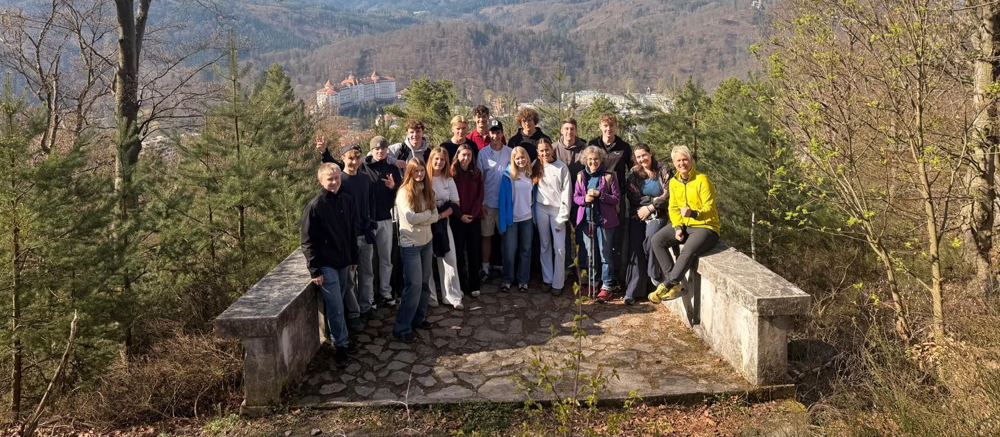

Über uns
Wer wir sind und
was uns antreibt.
Wir sind Schülerinnen und Schüler der 11. bis 13. Klasse (Oberstufe) des Gabriel-von-Seidl-Gymnasiums Bad Tölz und beschäftigen uns im Rahmen unseres Projektseminars Geografie mit der Geschichte und Erinnerungskultur der Sudetendeutschen.
Unter der Leitung von Cornelius von der Heyden, Oberstudienrat und Fachschaftsleiter Geografie, entsteht dabei bereits der dritte Dokumentarfilm unserer Reihe. Nach Filmen über den Böhmerwald und das Riesengebirge widmen wir uns diesmal dem Egerland und der Vertreibung der Sudetendeutschen.
Unser Ziel ist es, Geschichte aus unserer Perspektive zu entdecken, filmisch festzuhalten und anschließend mit der Öffentlichkeit zu teilen. Mit der Präsentation unseres Films möchten wir unsere Erfahrungen und Erkenntnisse weitergeben und zur Auseinandersetzung mit Vergangenheit, Heimat und Erinnerung anregen.
Unser Projektseminar Geografie
Gemeinsam unterwegs.

Foto anklicken und groß ansehen
Unterwegs im Egerland
Über unser Filmprojekt
Mit unserem Dokumentarfilm "Unterwegs im Egerland" widmen wir uns der Geschichte der Sudetendeutschen, ihrer Vertreibung und der Erinnerung an ihre verlorene Heimat. Dafür reisen wir ins Egerland und nach Brünn, besuchen historische Orte, recherchieren vor Ort und führen Gespräche mit Menschen, die ihre persönlichen Perspektiven und Erfahrungen mit uns teilen.
Der Film ist Teil einer bereits bestehenden Reihe: Nach Dokumentarfilmen über den Böhmerwald und das Riesengebirge bildet unser Projekt den dritten Teil dieser filmischen Spurensuche. Dabei verbinden wir historische Hintergründe mit persönlichen Geschichten und Eindrücken aus der Gegenwart.
Unsere Filmreihe im Überblick
- Teil 1 · 2024
Verschwundene Dörfer, vergessene Geschichten – auf Spurensuche im Böhmerwald
- Teil 2 · 2025
Geheimnisvolles Riesengebirge – Grenzerfahrungen zwischen Polen und Tschechien, auf den Spuren der sudetendeutschen Vergangenheit
- Teil 3 · Jahrgang 2025/26
Erlebnis Egerland – Unterwegs im Egerland
Unser aktueller Dokumentarfilm über die Reisen ins Egerland und nach Brünn.
- Ausblick · Jahrgang 2026/27
Abenteuer Heimatland – das Isergebirge im Wandel der Zeit
Das nächste Projektseminar Geografie führt die filmische Spurensuche fort.
Am Ende steht ein Film, der Geschichte nicht nur vermittelt, sondern erlebbar macht und zum Nachdenken über Heimat, Verlust, Erinnerung und Versöhnung anregt.